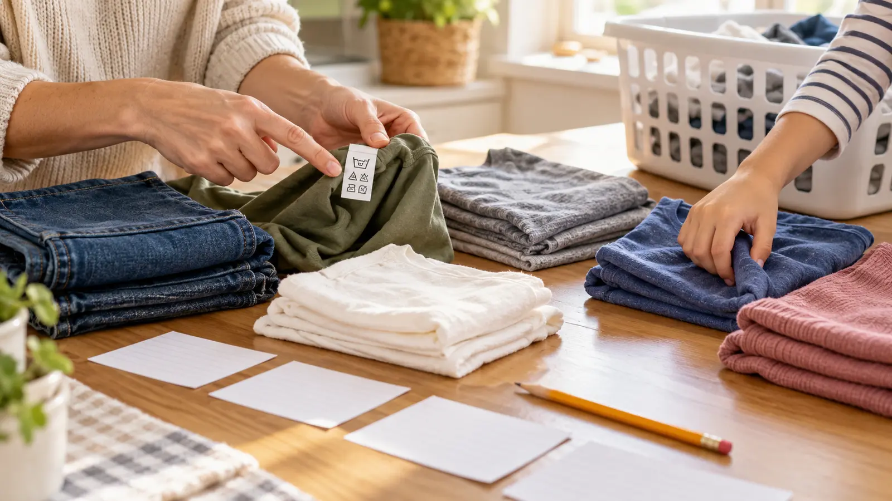

1. Wash
Copy hand or machine method and any stated temperature or cycle. Do not convert a symbol by guessing.
AT HOME · NO-SPEND SKILL · EXPLORATION
The first laundry skill is not pouring detergent. It is reading what the garment asks for, finding the strictest instruction, and knowing when the adult takes over.

Choose five ordinary clean garments the household owns: for example a T-shirt, jeans, fleece, sports shirt and sweater. The mix should contain at least two different care instructions but no urgent stain, private label information or delicate heirloom. Put them on a dry table with five blank index cards and a pencil. The child’s job is to find, read and translate. The adult’s job is to verify every conclusion against the exact words and symbols.
The Federal Trade Commission’s Care Labeling Rule requires manufacturers and importers of covered garments to provide regular care instructions. FTC guidance explains five washing-instruction elements: washing method and temperature when needed, bleaching, drying, ironing and warnings. Symbols are allowed but optional in the United States, and FTC warns that systems used elsewhere can be similar without being identical. That is why the lesson starts with the actual garment label and an official key, not a memory game from social media.
Suppose four garments allow machine washing and tumble drying, while one says hand wash and dry flat. The family does not vote. The fifth garment leaves the ordinary machine load. Suppose a label says wash separately or with like colors. That warning controls even when the fabric feels similar. FTC guidance says warnings are required when a reasonably expected care procedure could harm the garment or another item.
This rule protects children from a common bad lesson: “all dark clothes go together” or “everything uses cold.” Color, fiber, trim, construction, soil, previous dye transfer and care instructions all matter. ENERGY STAR says many households can effectively wash clothes in cold water, but that efficiency guidance does not erase a specific label, stain-treatment direction or sanitation need. The adult reads the machine and product instructions too.
Use these invented labels only after reading the real five garments:
Answer: the sweater goes to special adult decision because hand washing and flat drying do not match the other two. The T-shirt and trail pants do not automatically share a load because their wash temperatures differ and real color, soil and machine guidance remain unresolved. “Two piles plus adult check” is the right result.
Check pockets over the table. Paper can expose addresses, school information or medical details. Coins and small objects can become appliance hazards. Button or coin cells and other batteries require immediate adult control; do not let a child test, store or discard them. Move found private items to their owner and keep batteries away from children according to product and CPSC guidance.
Do not turn pocket findings into public content. No photos of labels with a child’s name, school, uniform identifier or custom medical information. The existing family claim-check lesson uses the same discipline: inspect the evidence without sharing private material.
CPSC warns that single-load liquid laundry packets can cause serious injury and tells caregivers to keep them in original containers, closed, locked, out of sight and reach. A colorful packet is not a counting manipulative. Children in this lesson do not touch, carry or choose detergent. The adult follows the exact product label and machine manual later.
Washer and dryer doors, drums and controls are also outside the lesson. Keep children out of appliances and away from hot surfaces, cords and wet floors. An adult clears lint according to the dryer manufacturer’s instructions and manages any gas, electrical or vent problem with an appropriate qualified technician. The lesson never teaches repair, chemical mixing or overriding a machine safety feature.
Use one garment instead of five. Photograph only the care label with no private identifier and enlarge it on a local device without posting. Read words aloud and let the child dictate the card. Use high-contrast blank cards, a clipboard or a stable table. If texture is unpleasant, the adult holds the garment while the child reads or sorts cards. If symbols create overload, use labels with written instructions first.
A child can participate by matching two identical words, circling a warning or choosing which pile receives a card. Independence is not the goal; accurate shared reasoning is. Stop when the activity becomes a compliance fight. The button-repair lesson is a separate supervised skill for another day, not an automatic next step.
This is already an indoor bad-weather plan. Low energy: read one garment and find only wash, dry and warning. No-reading: adult reads aloud; child places picture cards for wash, dry flat and stop. No clean laundry available: use the fictional round on index cards and do not open closets or hampers. Meltdown: return the clothes and end with one correct statement.
No supplies need to be purchased. Reuse scrap paper. Do not buy a symbol poster, sorting bin, special hamper or child detergent set. The point is to make the existing permanent label usable.
Postpone when detergent, chemicals or machines cannot be secured away from the child; the available garments contain private or upsetting information; a contamination, pest, bodily-fluid or hazardous-material issue requires specialized handling; or the adult does not have time to verify the child’s interpretation. Skip damaged electrical or gas appliances entirely and use a qualified service professional. This is a literacy-and-sorting exercise, not housekeeping labor assigned beyond a child’s safe capacity.
Reviewed October 24, 2026 by Mr Adventure Dad Editorial Desk using the FTC Care Labeling Rule compliance guide and official ASTM symbol chart, CPSC laundry-packet safety guidance, and ENERGY STAR washer efficiency guidance. The five-card sort and fictional labels are original educational tools, not a substitute for the actual garment, product or machine instructions. No affiliate links are attached. Report sourced corrections through About.
MAKE THE WEEK COUNT
Build the plan your family can finish well, then leave enough energy for the next part of the day.
More family plans